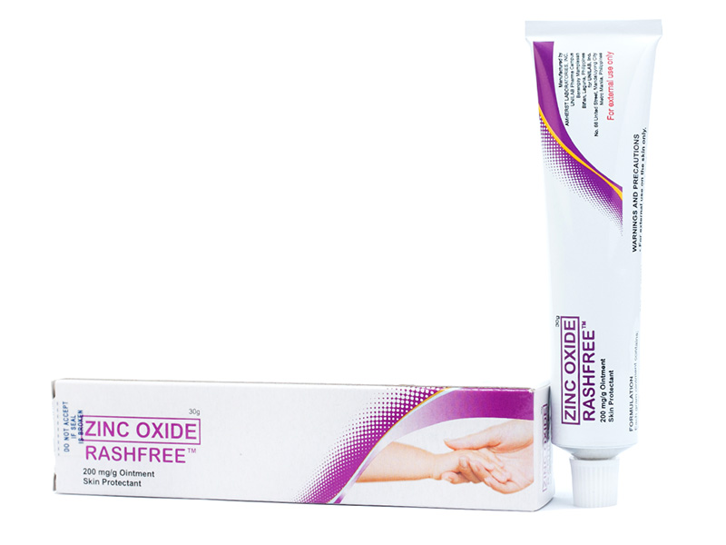

Medicine Guide For Itching

CLOTRIMAZOLE-CANESTEN
Description
💊 Purpose:• Treats athlete's foot, jock itch, and ringworm.
• Effective against fungal skin infections by preventing fungal growth.
🔥 How It Works:
Clotrimazole disrupts the cell membrane of fungi, causing it to weaken and eventually die.
💡 Common Use:
For fungal skin infections and itching.
Bayer. (n.d.). Canesten Cream: Clotrimazole. Retrieved from Bayer
Guide
✅ Dosage:Adults and children (≥2 years): Apply a thin layer 2-3 times daily for 3-4 weeks.
✅ Usage Tip: Wash and dry the affected area before applying.
BEPATHEN
Description
💊 Purpose:• Relieves itching caused by dryness, rashes, or mild skin irritation.
• Promotes skin barrier restoration.
🔥 How It Works:
Contains dexpanthenol, which moisturizes and repairs the skin by supporting its natural healing process.
💡 Common Use:
For mild itching, dryness, and skin irritation.
Bayer. (n.d.). Bepanthen Itch Relief Cream. Retrieved from Bayer
Guide
✅ Dosage:Apply 1-2 times daily or as needed.
✅ Usage Tip: Massage gently onto the affected area.

CALAMINE-CHLORELIEF
Description
💊 Purpose:Relieves itching due to rashes, insect bites, and minor skin irritations.
🔥 How It Works:
Forms a protective barrier on the skin, reducing irritation and preventing further itching.
💡 Common Use:
For insect bites, chickenpox, and minor skin rashes.
Unilab. (n.d.). Chlorelief Calamine Lotion. Retrieved from Unilab
Guide
✅ Dosage:Apply to the affected area 2-3 times daily.
✅ Usage Tip: Shake the bottle before application.

MOMETASONE-MOMECORT
Description
💊 Purpose:Relieves itching, redness, and inflammation caused by eczema and psoriasis.
🔥 How It Works:
A corticosteroid that reduces inflammation by suppressing the immune response.
💡 Common Use:
For eczema, psoriasis, and skin inflammation.
MSD. (n.d.). Mometasone Furoate Cream. Retrieved from MSD
Guide
✅ Dosage:Apply once daily.
🚫 Usage Limit: Avoid prolonged use on the face.
✅ Usage Tip: Use a thin layer on the affected area.

UNITED HOME-DERMATEC
Description
💊 Purpose:Relieves inflammation, redness, and itching associated with skin conditions.
🔥 How It Works:
A medium-potency corticosteroid that reduces inflammation and suppresses itching.
💡 Common Use:
For eczema, rashes, and skin conditions.
United Laboratories. (n.d.). United Home Dermatec. Retrieved from Unilab
Guide
✅ Dosage:Apply thinly once daily.
🚫 Usage Limit: Avoid prolonged use.
✅ Usage Tip: Do not cover the treated area with bandages.

KETOCONAZOLE-NIZORAL
Description
💊 Purpose:Treats fungal infections like ringworm, athlete's foot, and dandruff.
🔥 How It Works:
Inhibits fungal cell membrane synthesis, preventing growth and spread.
💡 Common Use:
For fungal skin infections and itching.
Johnson & Johnson. (n.d.). Nizoral Cream. Retrieved from Johnson & Johnson
Guide
✅ Dosage:Apply once daily for 2-4 weeks.
🚫 Usage Limit: Do not use for more than 4 weeks without consulting a doctor.
✅ Usage Tip: Keep the affected area clean and dry.

Relieves diaper rash and minor skin irritations.
🔥 How It Works:
Forms a protective barrier on the skin, reducing friction and irritation.
💡 Common Use:
For diaper rash, minor burns, and skin irritations.
United Laboratories. (n.d.). Rash Free Ointment. Retrieved from Unilab
Apply 1-2 times daily or as needed.
✅ Usage Tip: Clean the affected area before application.
ZINC OXIDE-RASH FREE
Description
💊 Purpose:Relieves diaper rash and minor skin irritations.
🔥 How It Works:
Forms a protective barrier on the skin, reducing friction and irritation.
💡 Common Use:
For diaper rash, minor burns, and skin irritations.
United Laboratories. (n.d.). Rash Free Ointment. Retrieved from Unilab
Guide
✅ Dosage:Apply 1-2 times daily or as needed.
✅ Usage Tip: Clean the affected area before application.

MOMETASONE-ELICA
Description
💊 Purpose:Treats eczema and psoriasis, reducing itching and inflammation.
🔥 How It Works:
A corticosteroid that reduces immune response and inflammation.
💡 Common Use:
For itching, redness, and inflammation.
MSD. (n.d.). Elica Cream. Retrieved from MSD
Guide
✅ Dosage:Apply once daily.
🚫 Usage Limit: Avoid prolonged use on the face.
✅ Usage Tip: Use a thin layer.
EFFICASCENT OIL
Description
💊 Purpose: Relieves dizziness, muscle pain, and tension headaches.🔥 How it works: The cooling effect promotes circulation, which reduces dizziness caused by muscle tension.
💡 Common use: For dizziness due to fatigue or muscle stiffness.
Efficascent Oil. (n.d.). Efficascent Oil: Liniment for pain relief. International Pharmaceuticals, Inc. Retrieved from https://www.efficascentoil.com.ph
Guide
Apply to the affected area 3–4 times daily.✅ Usage Tip: Inhale vapors for nasal decongestion if dizziness is linked to sinus issues.
KATIALIS OINTMENT
Description
💊 Purpose: Treats itching, rashes, and fungal infections.🔥 How it works: Contains sulfur and salicylic acid, which help reduce inflammation and kill fungi.
💡 Common use: For skin infections and fungal conditions.
Katialis. (n.d.). Katialis Ointment. Retrieved from Katialis
Guide
✅ Dosage:Apply thinly 2-3 times daily.
✅ Usage Tip: Avoid applying on open wounds.
APOLLO SEBO DE MACHO
Description
💊 Purpose: Prevents scarring and soothes itchy skin.🔥 How it works: Moisturizes and softens skin.
💡 Common use: For scars and minor skin itching.
Apollo. (n.d.). Apollo Sebo de Ma*cho*. Retrieved from Apollo
Guide
✅ Dosage:Apply thinly 2-3 times daily.
✅ Usage Tip: Avoid applying on open wounds.
DR. S. WANG'S SOAP
Description
💊 Purpose: Relieves itching, rashes, and skin irritations.🔥 How it works: Contains natural herbal extracts that soothe and cleanse the skin.
💡 Common use: For skin itchiness and irritation.
Mr. Wang. (n.d.). Wang Itch Relief Soap. Retrieved from Mr. Wang
Guide
✅ Dosage:Use during bathing, gently lather on the skin.
✅ Usage Tip: Rinse thoroughly with water.